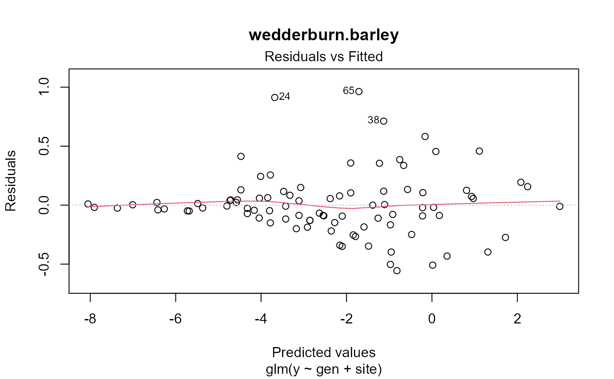
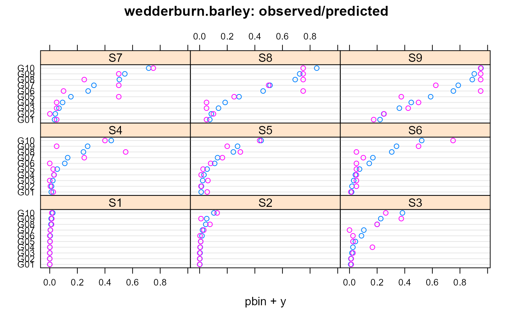
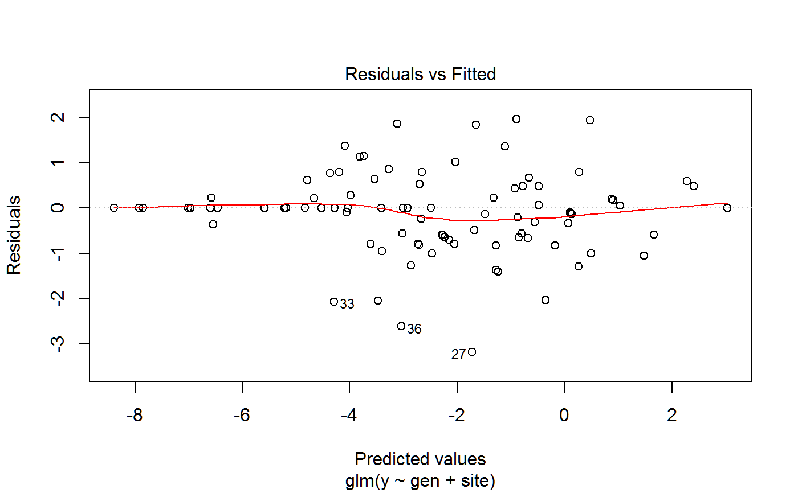
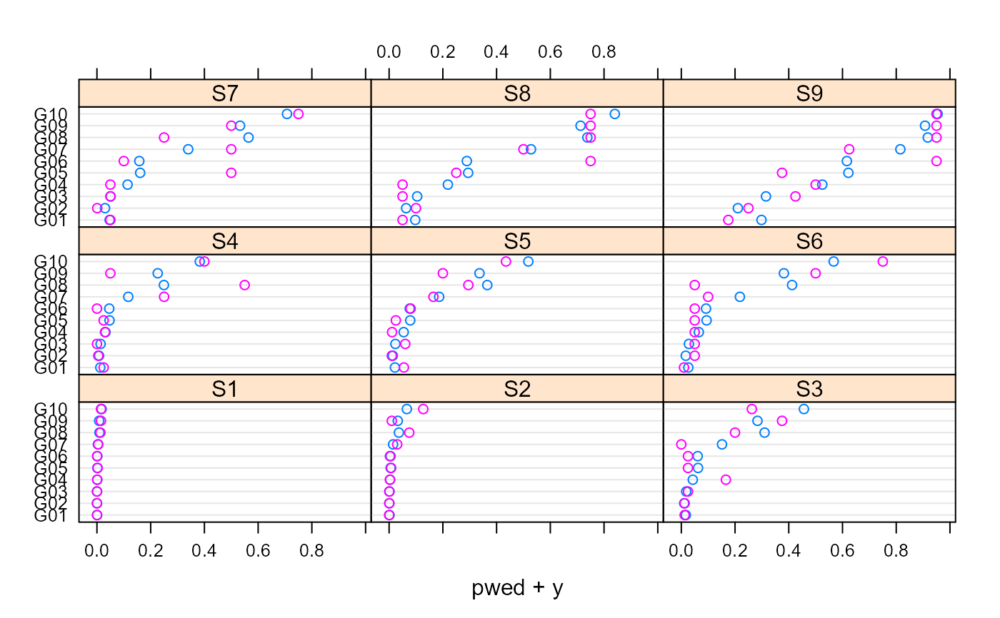

wedderburn.barley.RdPercent of leaf area affected by leaf blotch on 10 varieties of barley at 9 sites.
A data frame with 90 observations on the following 3 variables.
yPercent of leaf area affected, 0-100.
siteSite factor, 9 levels
genVariety factor, 10 levels
Incidence of Rhynchosporium secalis (leaf blotch) on the leaves of 10 varieties of barley grown at 9 sites in 1965.
Wedderburn, R W M (1974). Quasilikelihood functions, generalized linear models and the Gauss-Newton method. Biometrika, 61, 439--47. http://doi.org/10.2307/2334725
Wedderburn credits the original data to an unpublished thesis by J. F. Jenkyn.
McCullagh, P and Nelder, J A (1989). Generalized Linear Models (2nd ed).
R. B. Millar. Maximum Likelihood Estimation and Inference: With Examples in R, SAS and ADMB. Chapter 8.
library(agridat) data(wedderburn.barley) dat <- wedderburn.barley dat$y <- dat$y/100 libs(lattice) dotplot(gen~y|site, dat, main="wedderburn.barley")# Use the variance function mu(1-mu). McCullagh page 330 # Note, 'binomial' gives same results as 'quasibinomial', but also a warning m1 <- glm(y ~ gen + site, data=dat, family="quasibinomial") summary(m1)#> #> Call: #> glm(formula = y ~ gen + site, family = "quasibinomial", data = dat) #> #> Deviance Residuals: #> Min 1Q Median 3Q Max #> -0.64435 -0.13537 -0.02028 0.09500 0.81003 #> #> Coefficients: #> Estimate Std. Error t value Pr(>|t|) #> (Intercept) -8.0546 1.4219 -5.665 2.84e-07 *** #> genG02 0.1501 0.7237 0.207 0.836289 #> genG03 0.6895 0.6724 1.025 0.308587 #> genG04 1.0482 0.6494 1.614 0.110910 #> genG05 1.6147 0.6257 2.581 0.011895 * #> genG06 2.3712 0.6090 3.893 0.000219 *** #> genG07 2.5705 0.6065 4.238 6.58e-05 *** #> genG08 3.3420 0.6015 5.556 4.39e-07 *** #> genG09 3.5000 0.6013 5.820 1.51e-07 *** #> genG10 4.2530 0.6042 7.039 9.38e-10 *** #> siteS2 1.6391 1.4433 1.136 0.259870 #> siteS3 3.3265 1.3492 2.466 0.016066 * #> siteS4 3.5822 1.3444 2.664 0.009510 ** #> siteS5 3.5831 1.3444 2.665 0.009493 ** #> siteS6 3.8933 1.3402 2.905 0.004875 ** #> siteS7 4.7300 1.3348 3.544 0.000697 *** #> siteS8 5.5227 1.3346 4.138 9.38e-05 *** #> siteS9 6.7946 1.3407 5.068 3.00e-06 *** #> --- #> Signif. codes: 0 '***' 0.001 '**' 0.01 '*' 0.05 '.' 0.1 ' ' 1 #> #> (Dispersion parameter for quasibinomial family taken to be 0.08877777) #> #> Null deviance: 40.803 on 89 degrees of freedom #> Residual deviance: 6.126 on 72 degrees of freedom #> AIC: NA #> #> Number of Fisher Scoring iterations: 8 #># Compare data and model dat$pbin <- predict(m1, type="response") dotplot(gen~pbin+y|site, dat, main="wedderburn.barley: observed/predicted")# Wedderburn suggested variance function: mu^2 * (1-mu)^2 # Millar shows how to do this explicitly. wedder <- list(varfun=function(mu) (mu*(1-mu))^2, validmu=function(mu) all(mu>0) && all(mu<1), dev.resids=function(y,mu,wt) wt * ((y-mu)^2)/(mu*(1-mu))^2, initialize=expression({ n <- rep.int(1, nobs) mustart <- pmax(0.001, pmin(0.99,y)) }), name="(mu(1-mu))^2") m2 <- glm(y ~ gen + site, data=dat, family=quasi(link="logit", variance=wedder)) #plot(m2)# Alternatively, the 'gnm' package has the 'wedderburn' family. libs(gnm) m3 <- glm(y ~ gen + site, data=dat, family="wedderburn") summary(m3)#> #> Call: #> glm(formula = y ~ gen + site, family = "wedderburn", data = dat) #> #> Deviance Residuals: #> Min 1Q Median 3Q Max #> -3.1805 -0.6293 0.0000 0.3888 1.9710 #> #> Coefficients: #> Estimate Std. Error t value Pr(>|t|) #> (Intercept) -7.92236 0.44464 -17.817 < 2e-16 *** #> genG02 -0.46730 0.46869 -0.997 0.32209 #> genG03 0.07886 0.46869 0.168 0.86686 #> genG04 0.95409 0.46869 2.036 0.04547 * #> genG05 1.35262 0.46869 2.886 0.00515 ** #> genG06 1.32863 0.46869 2.835 0.00595 ** #> genG07 2.34006 0.46869 4.993 4.01e-06 *** #> genG08 3.26257 0.46869 6.961 1.30e-09 *** #> genG09 3.13550 0.46869 6.690 4.10e-09 *** #> genG10 3.88728 0.46869 8.294 4.33e-12 *** #> siteS2 1.38311 0.44464 3.111 0.00268 ** #> siteS3 3.86002 0.44464 8.681 8.20e-13 *** #> siteS4 3.55700 0.44464 8.000 1.54e-11 *** #> siteS5 4.10781 0.44464 9.238 7.53e-14 *** #> siteS6 4.30529 0.44464 9.683 1.13e-14 *** #> siteS7 4.91808 0.44464 11.061 < 2e-16 *** #> siteS8 5.69483 0.44464 12.808 < 2e-16 *** #> siteS9 7.06760 0.44464 15.895 < 2e-16 *** #> --- #> Signif. codes: 0 '***' 0.001 '**' 0.01 '*' 0.05 '.' 0.1 ' ' 1 #> #> (Dispersion parameter for wedderburn family taken to be 0.9885279) #> #> Null deviance: 370.526 on 89 degrees of freedom #> Residual deviance: 66.269 on 72 degrees of freedom #> AIC: NA #> #> Number of Fisher Scoring iterations: 13 #>